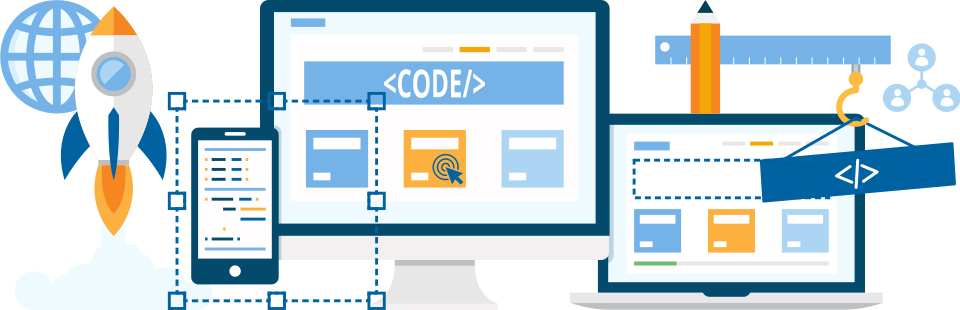
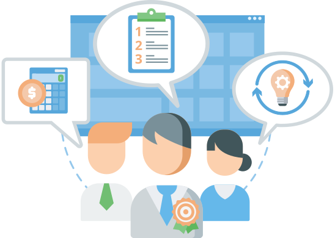
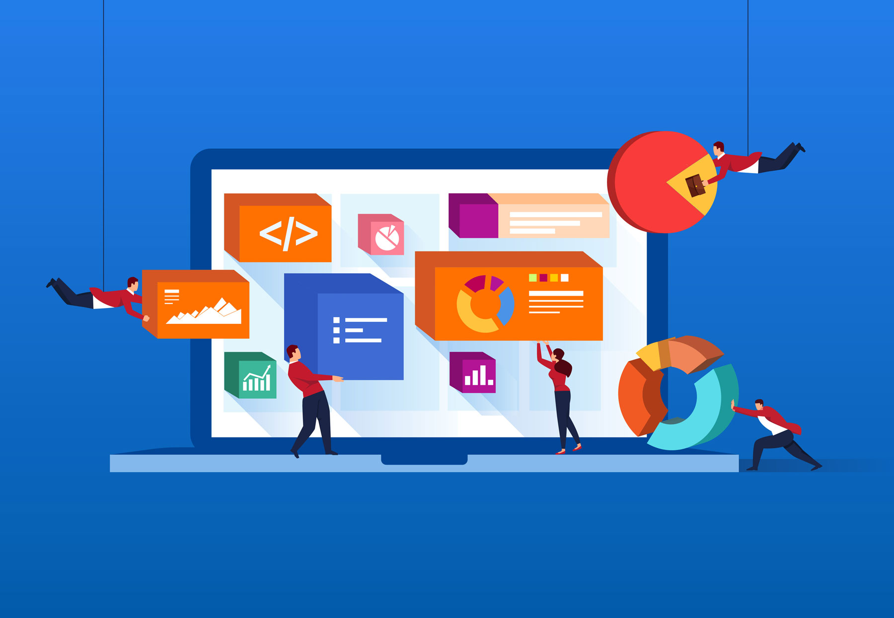
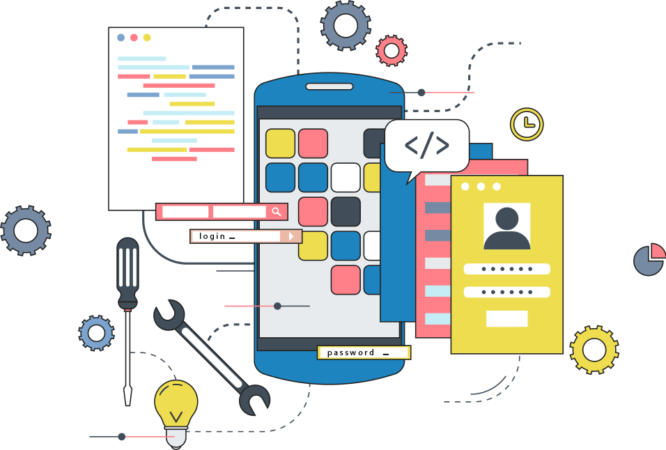
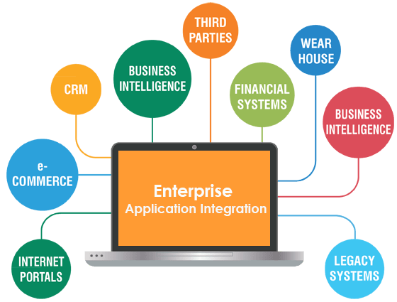
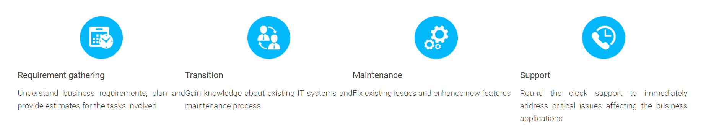

Level 1 support
Involves a user support team that receives queries in your preferred way – by phone/video calls, chat, and social networks, via email, using specific web forms or a tracking system. The Service desk team registers and prioritizes the queries, collects the comprehensive description of the problems you faced, and either directly solves simple, previously documented issues or passes them to the next level of support. Support Engineer takes responsibility for the incident and provides status according to agreed SLA till its closure.
Level 2 support
Involves a trained technical support team that deals with system troubleshooting, monitors key performance indicators of the system as well as takes care of simple configuration issues, software installations, and routine maintenance.
Level 3 support
Involves a team of engineers with deep understanding of the technologies and platform used in your application. With access to the application’s server side, the team fixes more complex issues – previously unregistered or requiring code reviews or substantial changes in the system. The engineers can also carry out complex configurations, database administration as well as server and network repairs.
Application Development
Our Application Development services help IT leaders develop prevailing, digital-ready IT pillars, with low TCO, while improving legacy systems. Drawing on our experience in all main industries, we develop solutions that solve prevailing IT problems.
Our Methodology
Take the hassle out of your software development
When it comes to software development, most leading software companies now outsource the work. It’s more convenient and cost-effective and it lets them focus on other core functions of their business. However, it’s crucial the project is still completed on time and within budget. That’s why enterprises want to work with a team that practices the agile methodology for their software development solutions.
Agile software development requires a much higher level of collaboration between all those involved. As a result, it requires one or both of the parties to make compromises on their traditional processes to adapt to the task in hand. This requires an experienced software partner with whom you can successfully collaborate with to develop customized software solutions as per your requirements. Your agile software development requires someone like us.
CHOOSE YOUR SOFTWARE DEVELOPMENT SERVICE BY CATEGORY

We offer unique and secure web application development solutions matching customer’s business strategies and requirements.Focused on collaborative approach, our team understands customers’ needs to deliver business value.
Helping clients scale new frontiers, we draw from our decades of experience in web design and development to help you implement integrated systems and processes.
Hidden Brains enables better control and visibility into your web development project - by strategically combining mature project development methodologies with robust project management tools and domain expertise to deliver end-to-end web development solutions.
Explore our consulting services in detail
Сustom and Outsourced Product Development
Frontend development
Rollz keeps up with the latest trends in front-end development to meet the growing user demands for simplicity and visual appeal. To make web applications not only powerful, but also interactive, intuitive and stylish, we work with a wide range of technologies.
Backend development
We define our backend development tools in accordance with our customers’ business requirements and develop robust and durable backends, irrespective of the technologies we use. For convenient further administration, we also offer deployment and customization of a suitable content management system.
Database development
Whether you already have a database and simply need integration, or cannot decide on your app’s initial database, our specialists are ready to help. Rollz works with all the most widely known SQL and NoSQL databases.
Database development
Whether you already have a database and simply need integration, or cannot decide on your app’s initial database, our specialists are ready to help. Rollz works with all the most widely known SQL and NoSQL databases.
Hidden Brains enables better control and visibility into your web development project - by strategically combining mature project development methodologies with robust project management tools and domain expertise to deliver end-to-end web development solutions.

We cover all stages of mobile application development and offer them both as stand-alone services and as parts of our full-cycle mobile app development.
Explore our application mordernization services in detail
Mobile Consulting
We provide professional mobile consulting and business analysis to analyze your needs and elicit requirements, define and prioritize features, as well as plan out the solution architecture and conduct usability testing.
Mobile App Design
Our mobile UI/UX design specialists create a conversion-driven mobile user experience that makes for high conversion and user retention.
Mobile App Development
We welcomes all types of mobile app implementation – from website-to-app conversion to original concept realization; from refactoring of your existing code to blank-slate app development.
We offer native mobile development for iOS, Android, Windows Phone and cross-platform/hybrid development on Cordova/PhoneGap, Xamarin, and React Native. Our business analysts help you decide on the platforms to target and choose a suitable development framework.
Backend Development
Our team of backend developers creates robust, secure back ends and provides their integration with an app (or apps) or with any third-party systems of your choice.
Mobile App QA and Support
Our mobile testing experts perform all types of mobile testing and debugging to ensure the high quality of your mobile solution.
Mobile App Evolution
Rollz is always willing to help your app grow by fine-tuning it, expanding its functionality according to your roadmap, and introducing cutting-edge mobile experiences to keep your users continuously engaged.

If you are spending more time and IT budget on simply maintaining your traditional applications rather than new innovations and digital transformation, then modernizing these applications to give a new lease of life should be a top priority.
However, modernization isn’t about a mere change of code, tools and features, but the way you transfer information into new environments – quickly, cost-effectively, and most importantly, without losing data quality and integrity.
At Rollz, Application Modernization Practice helps companies move rapidly through this complicated yet need-of-the hour modernization process and obtain measurable value with less risk. We make full use of your existing application code investments and at the same time, enable you to embrace modern development practices, platforms, architectures and enhance security.
Explore our application mordernization services in detail
Application modernization consulting
We thoroughly investigate your legacy application code and infrastructure, mine requirements and provide detailed guidance on the improvements that can help you to derive max value from previous investments.
Application re-hosting
We complement moving the application to the cloud with the introduction of small modifications and upgrades in code that will bring more advanced cloud capabilities (improved performance, scaling, fault-tolerance, etc.) to the application.
Application re-platforming
We complement moving the application to the cloud with the introduction of small modifications and upgrades in code that will bring more advanced cloud capabilities (improved performance, scaling, fault-tolerance, etc.) to the application.
Application reengineering
We reverse engineer, re-structure, modularize your application or their parts to make them live up to your new business requirements. This allows for:
- Mobile enablement to extend the app’s reach and answer the needs of the on-the-go time.
- Fitting Continuous Integration (CI), Continuous Delivery (CD) and other DevOps practicies.
- Creation of web services.
- The introduction of new functionality.
- Enhanced app understanding to simplify future maintenance or replacement.
- An upgrade of certain aspects (like performance, response time).
Application rearchitecting
We transform the architecture of the application (e.g., split it into web services/microsevices) to make it leverage cloud possibilities to the fullest. The application will adapt to dynamic load and performance requirements, allow for partial updates, technology mix, and shared platform usage.

offers comprehensive support of enterprise applications to keep the business processes running smooth and efficient. We operate in a wide range of industries, including manufacturing, healthcare, banking, retail, telecommunications, travel and hospitality.
At Rollz, we delivers application monitoring, support, enhancement, and incident and patch management. We keep the processes completely visible and continuously update you on the current state of your applications, providing detailed reports on implementation plans, activities performed and measures introduced.
Explore our application management services in detail
Application monitoring and performance management
We help you to maintain the performance of the applications critical to your enterprise. With thorough monitoring activities, our team can proactively diagnose and fix evolving slowdowns and failures before they are got detected by end users.
Application troubleshooting
We resolve occurring issues in your critical applications related to specific misbehaviors, slow request handling, runtime errors, component unavailability and poor data quality.
Application enhancements
We manage requests for minor and more substantial app changes, as well as assist with releases of updated application versions.
Change management and training services
We help to ensure you applications stay current with changing business needs and goals. Our consultants conduct a detailed review of your applications and relevant business processes to modify applications (introducing automation and integrations, porting to new techs and platforms, restructuring solution) according to updated business policies, data, and workflows.
Application rearchitecting
o provide a smooth switch to upgraded systems, we deliver a comprehensive change management plan (including full test coverage, risk analysis and after-launch review), review and training services. We closely work with your IT team to help them to prepare for the management of updated applications. Also, providing step-by-step guides, onsite training and workshops, we ensure that your end users feel confident with new system versions or functional extensions and know how to use them in a productive and efficient way.

Enterprise ecosystems comprise of a large number of disparate technologies, applications and packaged software products originating from various vendors. Multiple IT systems can create unnecessary complexities and redundancies within the IT landscape which prevents the automation of even the simplest of processes.
Our Application Integration Services provide efficient and cost effective methodologies to assimilate heterogeneous enterprise IT landscape, eliminating the need for radical changes to the existing IT infrastructure and data structures. This translates into more manageable and streamlined organizational processes, thereby increasing the stability, scalability and performance of the system as a whole.
Explore our application Integration services in detail
Integration consulting
We can navigate you through the world of multiple integration models, patterns and technologies. Our team implements the detailed assessment of your existing IT infrastructure, its needs and constraints. Relying on the results of this investigation, we design a unique integration solution with the architecture, technology stack and security infrastructure that will best answer the present and the planned future of your IT environment as well as your expected timeline and dedicated budget.
Integration implementation
We base integration on your requirements or meticulously gather them cooperating with your employees and vendors and investigating your components to smoothly integrate your independent software into the coherently working environment. We can apply to Continuous Delivery / Continuous Integration model and other DevOps practices, such as test automation and shared code repository, to allow for tracking of actual integration results and prevent “the release day nightmare”.
Integration combined with application modernization
We complement integration with migration, re-architecting or re-engineering of your legacy applications to simplify their communication with other components of the integration environment and ensure easier integration scaling up and upgrades.
Integration testing
We perform thorough integration testing at both system and component levels to ensure compatibility and cooperation of the integrated applications.
Integration operations (based on the DevOps model)
We can assist you in running integrated environment to prevent any disruption of business processes, keep the users more satisfied and reduce upgrade time. Our team takes responsibility for professional configuration and change management, maintenance of sufficient (established) response time and quick troubleshooting of performance faults.
Integration support and evolution
With an eye to ensuring smooth and sustainable work of the integrated environment, our experts can monitor and track its important indicators, including performance, load, and message queues.
We also help you to seamlessly introduce new components to the integrated solution when your business develops and increases its complexity and manage integration updates and modifications.
With businesses constantly evolving, it is imperative for organizations to drive changes to the application environment, while maintaining existing mission critical IT applications and infrastructure. Our application maintenance and support services aim to reduce system outages and improve the performance and efficiency of the application portfolios. Our mature project management processes and application maintenance services optimize cost and ensure high service levels. Our application maintenance services typically include the following phases:

Explore our application maintenance and support services in detail
WHY ROLLZ GROUP?
Key company highlights:
- 30 years in IT.
- Over 700 developers on board.
- More than 50% of the developers are of senior level.
- Professional business analysis.
- Established project management processes.
- 1,850 success stories (including projects for Walmart, eBay, NASA JPL, PerkinElmer, Baxter, IBM, Orange, BBC, MTV).
- Gold Microsoft Application Development and Silver Level Oracle partnership competencies; Microsoft Cloud Computing and AWS Partner Program member.
- Featured in Forrester’s 2018 Now Tech overview as a recommended custom software provider.